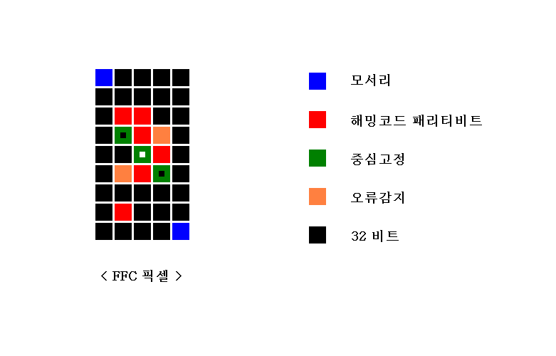
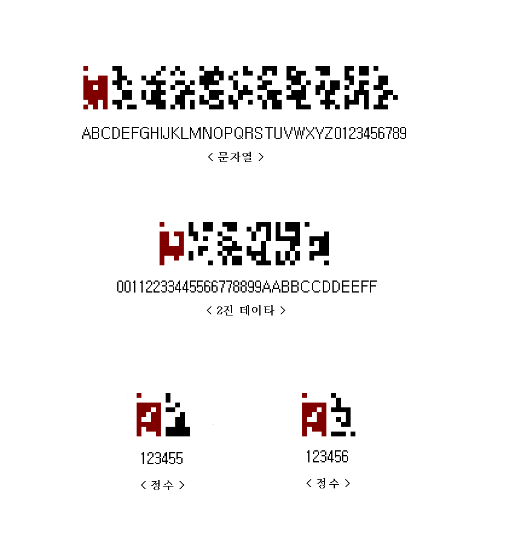
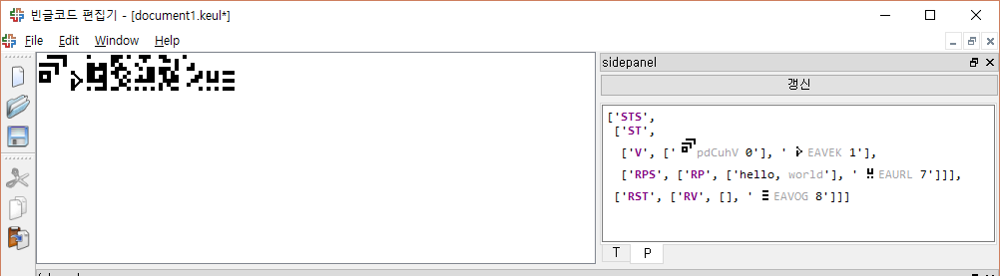
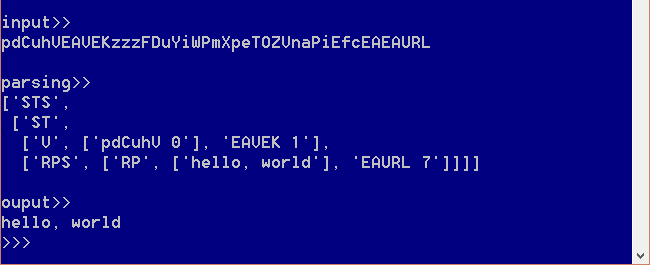

FFC 코드¶
FFC(forty five pixel code)는 빈글에서 바이너리를 표현하는 형식이다. 문자열이나 정수값 등의 데이타를 픽셀맵 형식으로 표현한다. 하나의 FFC는 45개의 픽셀로 이루어져 있고 오류 정정이 가능한 32비트(4Byte)의 데이타를 저장한다. 오류 정정을 위해 6개의 해밍코드(Hamming Code) 패리티비트를 사용한다.
하나의 픽셀에서 오류가 있는 경우 정정 가능하다. 하지만 두 개 이상의 픽셀에 오류가 있으면 정정할 수 없고 픽셀들 중에 오류가 있음을 감지 할 수 있다.
32 비트에 해당하는 픽셀을 제외하면 13개 픽셀이 남는데 이 픽셀들은 패리티비트이거나 전체 FFC 코드의 중심과 크기를 확정하는 기준점으로 기능한다. 중심고정을 위해 사선으로 배치된 3개 픽셀 중 가운데 위치한 픽셀은 흰색이고 나머지는 2개는 검정색이다. 2개의 모서리 픽셀은 가장자리(상하좌우 마지막라인) 위치에 검정 픽셀이 하나 이상 있도록 설정된다.
[
( 40,41,42,43,44),
( 35,36,37,38,39),
( 20,15, 0, 5,10),
( 21,16, 1, 6,11),
( 22,17, 2, 7,12),
( 23,18, 3, 8,13),
( 24,19, 4, 9,14),
( 30,31,32,33,34),
( 25,26,27,28,29),
]
해밍코드 패리티비트 = (0,1,3,7,15,31)
중심고정 = (2,8,16)
오류감지 = (6,18)
모서리 = (29,40)
FFC 는 보통 빈글로 나타내기 어려운 데이타를 문장에 포함시켜야 할 때 사용한다. 하나 이상의 FFC를 길이 제한없이 나열할 수 있으므로 긴 문자열, URL, 파일데이타 등도 FFC 로 나타낼수 있다. 데이타 타입을 지정하기 위해 첫번째 FFC 는 타입정보를 담고 있다.
FFC 를 문장에 포함시킬 때는 하나의 단어처럼 사용하면 된다.
{kind=link}
타입정보가 없이 사용되는 경우에 참조어 처럼 사용할 수 있다.
{kind=link}
"hellow, world" 문자열을 출력하는 실행문을 빈글언어 코드로 표현하면 다음과 같다.
{kind=link}
출력되는 "hellow, world" 문자열은 FFC 코드로 쓰여진다.
 